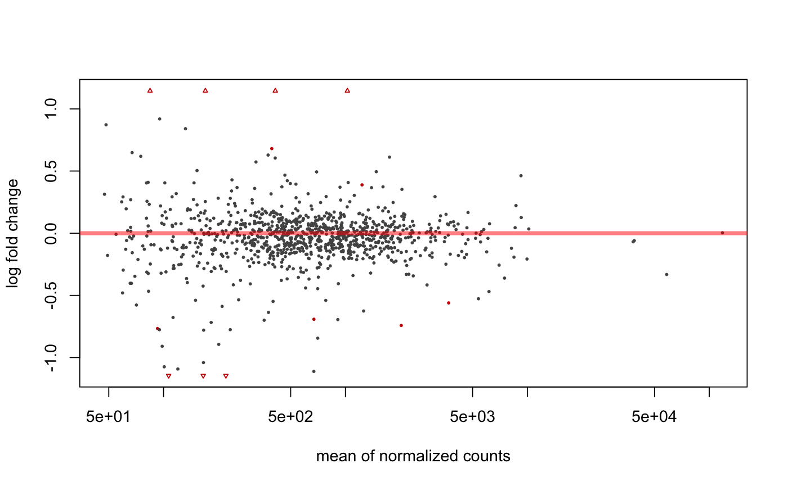
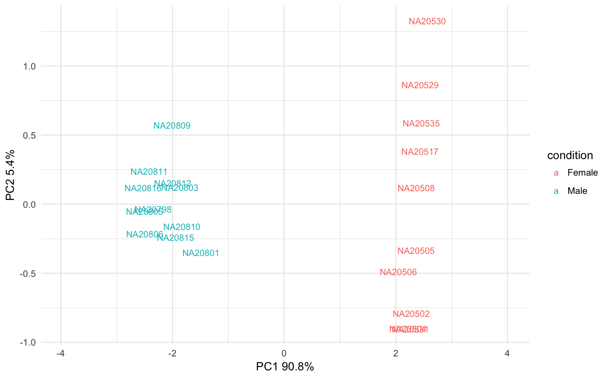

Complete report from DESeq2 analysis
Complete report from DESeq2 analysis
degResults(res = NULL, dds, rlogMat = NULL, name, org = NULL, FDR = 0.05, do_go = FALSE, FC = 0.1, group = "condition", xs = "time", path_results = ".", contrast = NULL)
Arguments
| res | output from |
|---|---|
| dds |
|
| rlogMat | matrix from |
| name | string to identify results |
| org | an organism annotation object, like org.Mm.eg.db. NULL if you want to skip this step. |
| FDR | int cutoff for false discovery rate. |
| do_go | boolean if GO enrichment is done. |
| FC | int cutoff for log2 fold change. |
| group | string column name in colData(dds) that separates samples in meaninful groups. |
| xs | string column name in colData(dss) that will be used as X axes in plots (i.e time) |
| path_results | character path where files are stored. NULL if you don't want to save any file. |
| contrast | list with character vector indicating the fold change values from different comparisons to add to the output table. |
Value
ggplot2 object
Examples
data(humanGender) library(DESeq2) idx <- c(1:10, 75:85) dse <- DESeqDataSetFromMatrix(assays(humanGender)[[1]][1:1000, idx], colData(humanGender)[idx,], design=~group) dse <- DESeq(dse)#>#>#>#>#>#>#> #> #>#>#>res <- degResults(dds = dse, name = "test", org = NULL, do_go = FALSE, group = "group", xs = "group", path_results = NULL)#>#>#> ## Comparison: test {.tabset} #> #> #> <br>out of 1000 with nonzero total read count<br>adjusted p-value < 0.1<br>LFC > 0 (up) : 6, 0.6% <br>LFC < 0 (down) : 7, 0.7% <br>outliers [1] : 0, 0% <br>low counts [2] : 0, 0% <br>(mean count < 47)<br>[1] see 'cooksCutoff' argument of ?results<br>[2] see 'independentFiltering' argument of ?results<br><br>NULL #> #> #> Differential expression file at: test_de.csv #> #> Normalized counts matrix file at: test_log2_counts.csv #> #> ### MA plot plot #>#> #> #> ### Volcano plot #> #> #> #> ### QC for DE genes#> #> #> ### Most significants, FDR< 0.05 and log2FC > 0.1 : 10#> #> #> #> ### Plots top 9 most significants#>#>#> #> #> #> ### Top DE table #> #> #> #> | | baseMean| log2FoldChange| lfcSE| stat| pvalue| padj| absMaxLog2FC| #> |:---------------|--------:|--------------:|------:|------:|------:|------:|------------:| #> |ENSG00000067048 | 1025.04| 10.1572| 0.4233| 23.994| 0.0000| 0.0000| 10.1572| #> |ENSG00000012817 | 411.54| 9.2394| 0.4237| 21.805| 0.0000| 0.0000| 9.2394| #> |ENSG00000067646 | 169.81| 10.1875| 0.6579| 15.484| 0.0000| 0.0000| 10.1875| #> |ENSG00000005889 | 670.86| -0.6919| 0.1315| -5.264| 0.0000| 0.0000| 0.6919| #> |ENSG00000006757 | 92.66| -0.7666| 0.1612| -4.757| 0.0000| 0.0004| 0.7666| #> |ENSG00000073282 | 220.16| -1.8686| 0.4206| -4.442| 0.0000| 0.0015| 1.8686| #> |ENSG00000005302 | 2026.55| -0.7419| 0.1763| -4.207| 0.0000| 0.0037| 0.7419| #> |ENSG00000005020 | 1233.86| 0.3888| 0.0952| 4.083| 0.0000| 0.0056| 0.3888| #> |ENSG00000003400 | 393.63| 0.6803| 0.1766| 3.851| 0.0001| 0.0131| 0.6803| #> |ENSG00000069702 | 106.67| -1.6323| 0.4586| -3.560| 0.0004| 0.0371| 1.6323| #> |ENSG00000010278 | 84.31| 1.2036| 0.3555| 3.386| 0.0007| 0.0645| 1.2036| #> |ENSG00000023171 | 165.32| -1.4022| 0.4236| -3.310| 0.0009| 0.0777| 1.4022| #> |ENSG00000072501 | 3694.76| -0.5605| 0.1708| -3.281| 0.0010| 0.0794| 0.5605| #> |ENSG00000070018 | 119.89| -1.0921| 0.3512| -3.109| 0.0019| 0.1339| 1.0921| #> |ENSG00000059377 | 131.98| 0.8405| 0.2745| 3.062| 0.0022| 0.1464| 0.8405| #> |ENSG00000008277 | 377.44| -0.6369| 0.2137| -2.981| 0.0029| 0.1796| 0.6369| #> |ENSG00000005059 | 479.13| 0.4225| 0.1492| 2.832| 0.0046| 0.2289| 0.4225| #> |ENSG00000012963 | 1829.21| 0.2471| 0.0862| 2.867| 0.0041| 0.2289| 0.2471| #> |ENSG00000038427 | 100.87| -1.0744| 0.3810| -2.820| 0.0048| 0.2289| 1.0744| #> |ENSG00000068079 | 1035.18| 0.4076| 0.1416| 2.879| 0.0040| 0.2289| 0.4076| #> #>